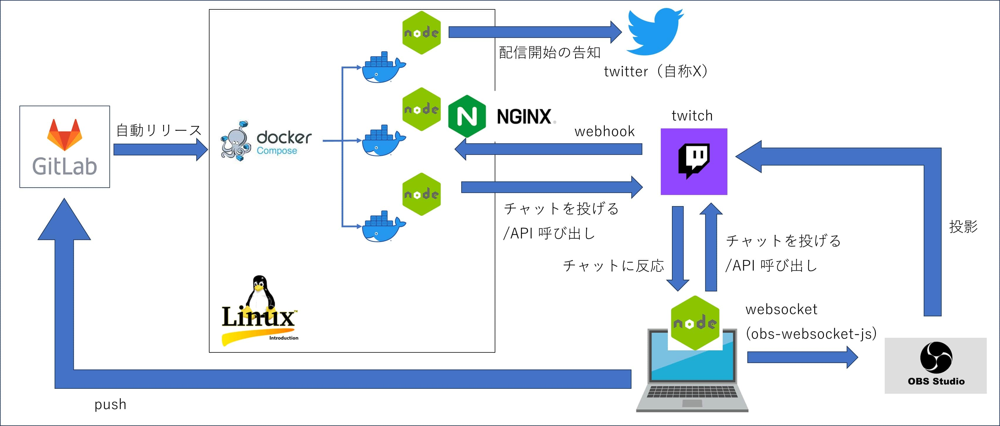
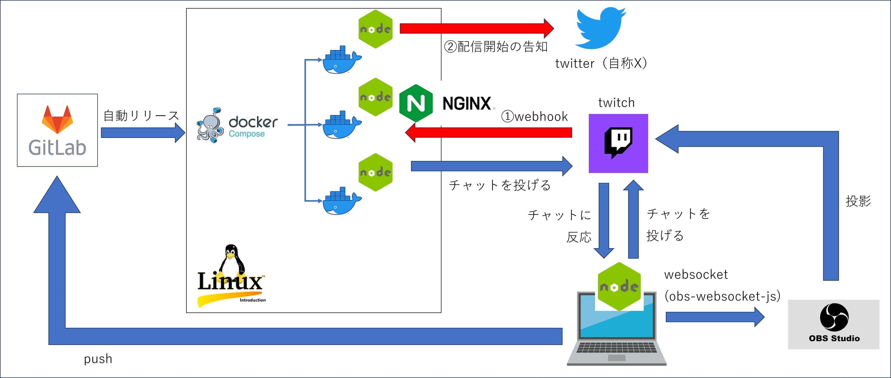

Node.js × Twitch, Twitter, OBS
はじめに
このページでは、自分が Node.js を使って実際に作った物について記載しています。
Node.jsの記事を読んだ前提で書いています。今見ているこの頁の1階層上の記事です。
EventEmitter という単語を見てピンと来ないようなら、非同期のイベント駆動型ランタイムの部分だけでも読んでください。
作った物
Twitch というプラットフォームを使ってゲームの配信をしているのですが、Node.jsを使ってbotを動かすなど、いろいろカスタマイズしています。そのシステム構成が以下の図。
下図の右下の OBS Studio はゲーム配信するためのツールです。 obs-websocket-js というライブラリを使って、Node.js から WebSocket 経由で操作しています。

カスタマイズの例
-
チャンネルポイント使用→webhook→チャット→OBS操作
Twitch にはチャンネルポイントという機能があり、（普通こんな使い方はしないと思うのですが）ポイントが使用されたら任意のサーバーに Webhook リクエストを飛ばすこともできます。
サーバに Webhook が飛んで来たらそれに対応するメッセージをチャットに投げて、そのチャットをトリガーに EventEmitter でローカルの Node.js を稼働させ、WebSocket 経由で OBS を操作しています（下図の赤線の流れ）。
以下がチャンネルポイントを使った例(2h9m35s頃)。
①TwitchからWebhook を受けて
②「やきつくしてさしあげますわ！」という台詞をbotが喋り
③その台詞をトリガーにローカルの Node.js が稼働し
④OBS を操作することで画面に炎を表示させたり、音声を流したりしています。
-
配信開始→Webhook→twitter
配信を開始した際にもWebhookリクエストを飛ばすことができるので、それをトリガーにX（旧twitter）に配信開始を告知しています（下図の赤線の流れ）。

以下が実際のポスト。
twitch配信通知bot
— sagamax@サガとレトロゲー (@sagamax__) September 30, 2023
twitchでロマサガ3配信中です！
お時間合う方是非遊びに来てみてくださーい。
▶️視聴はこちら：https://t.co/P46Z6JrYH1#ロマサガ3 #レトロゲーム #レトロコンシューマー愛好会 pic.twitter.com/UeLX1jIXB8
以降、この中身がどうなっているのかについて説明していきます。
実装
以下リンク先で、 Node.js と Twitch の組み合わせ部分、 Twitter との組み合わせ部分、 OBS との組み合わせ部分の3つに分けて説明しています。
開発する前に、以下のように package.json に "private": true を追記しておくといいと思います。これがあるとモジュールの公開ができなくなります。公開する気がない場合は念のため記載していた方がまあ安全かなと思います。
package.json{
"private": true,
...
}参考サイト